Keresztelo Szent JanosSzent Mate, EvangelistaSzent Mark, Evangelista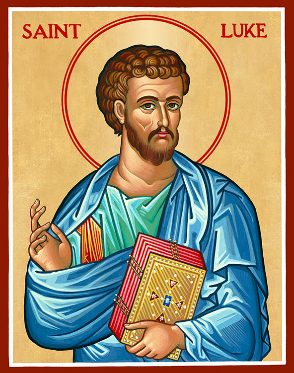Szent Lukacs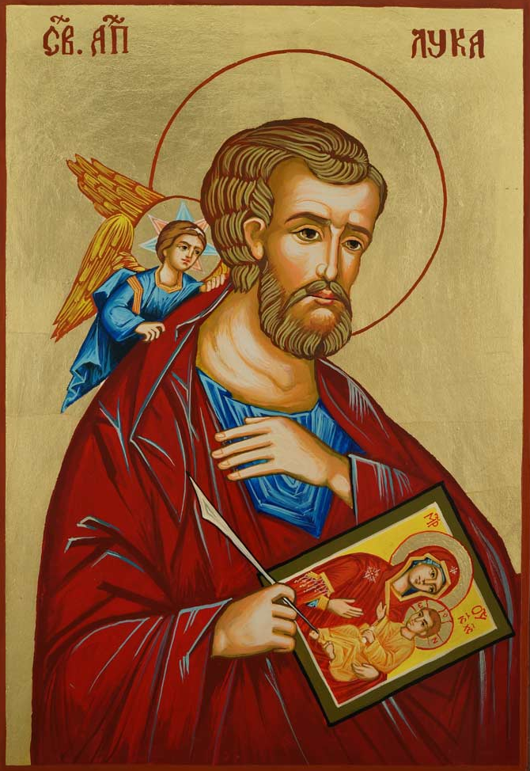Szent LukacsSzent Janos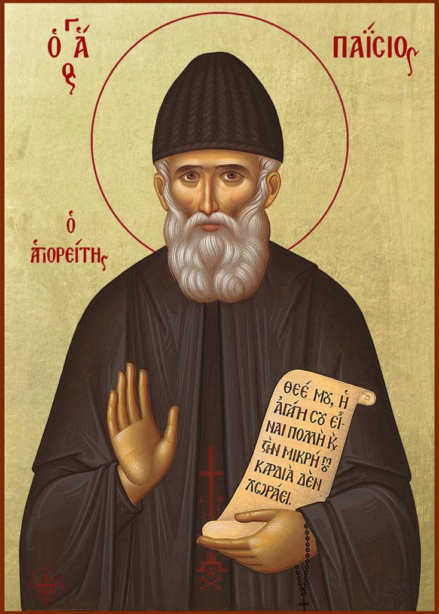Szent Paisziosz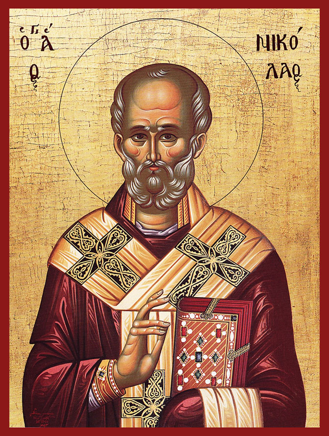Szent MiklosSzent Paisziosz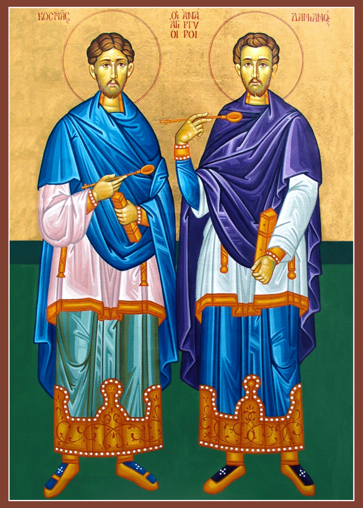Szent Kozmasz es Damjan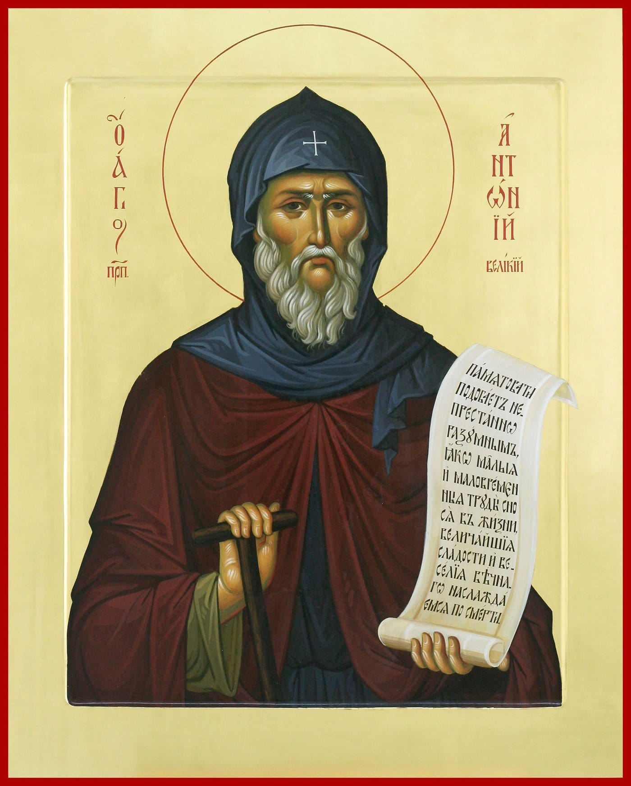Nagy Szent Antal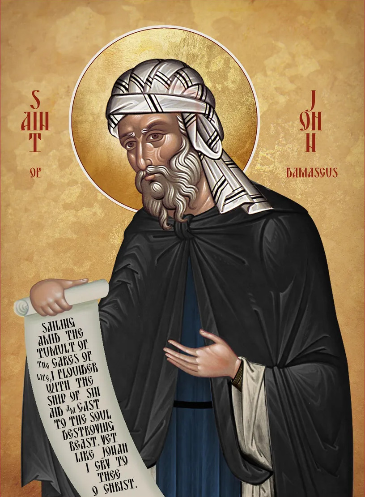Damaszkuszi Szent JanosSzent Nektariosz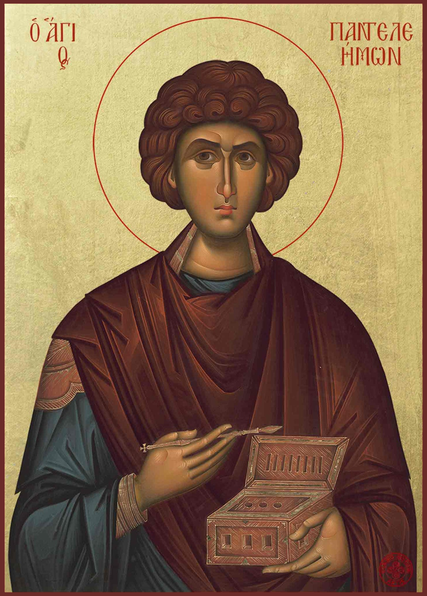Szent PanteleimonSzarovi Szent SzeraphimAthosz-hegyi Szent Szilhouan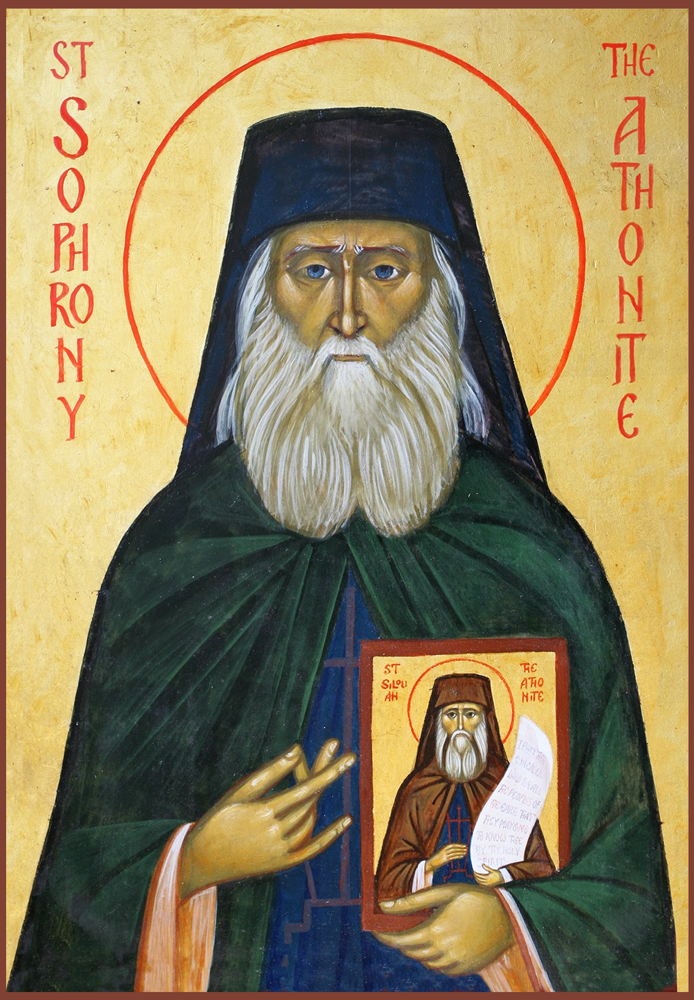Szent Szophrony (Essex)Szent Veronika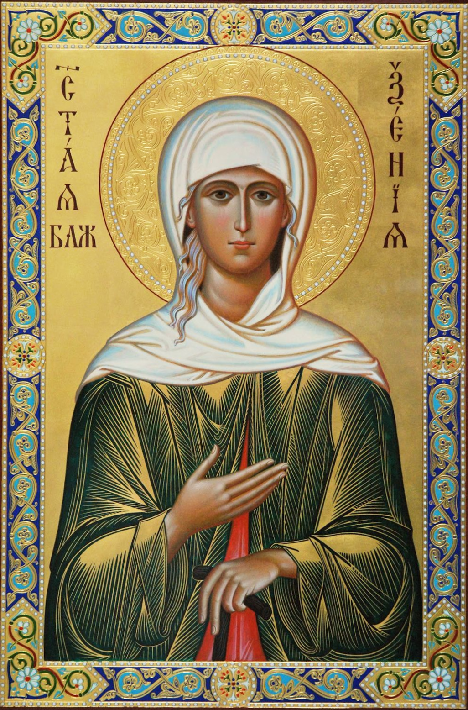Szent Xenia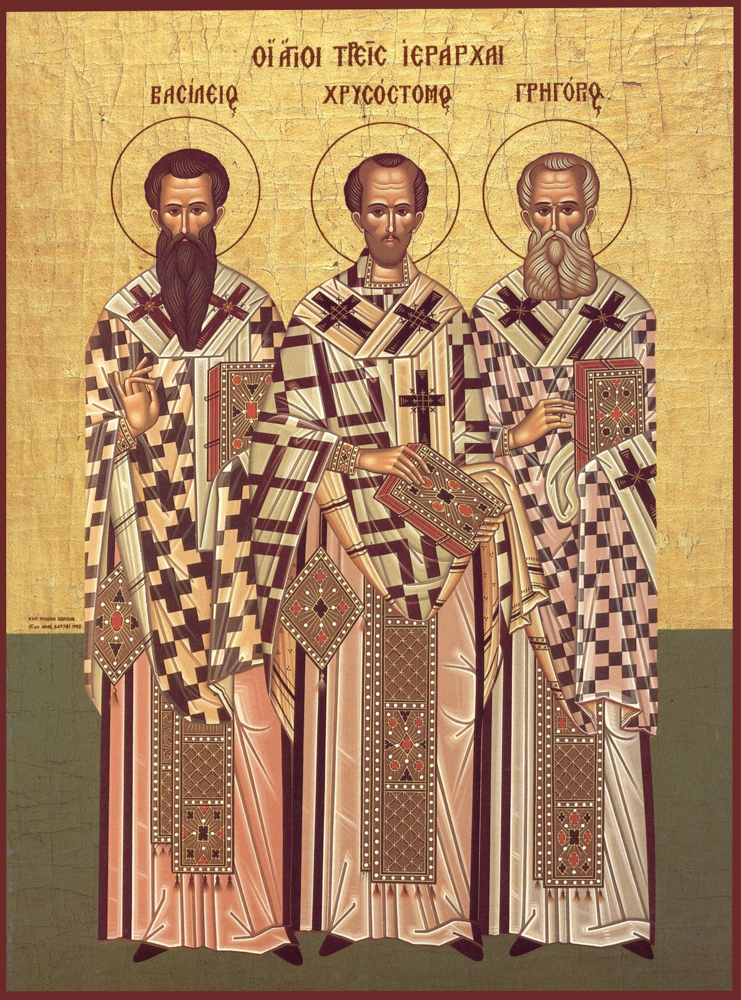Harom Fopap (St. John Chrysostom, St. Basil the Great, St. Gregory the Theologian)